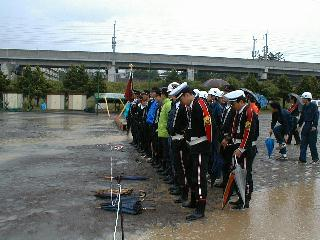
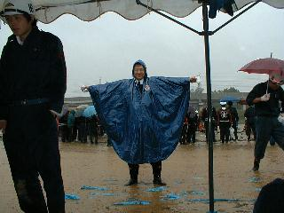

| ラッパ班 |
ラッパ班です！よろしくね！
消防ラッパも、今では無線通信が発達し、信号伝達という本来の目的は薄れつつありますが、出初式をはじめとする消防式典では欠かせない存在です。
上田市消防団は特にラッパ吹奏技術の向上に熱心で、月１度のラッパ隊全体訓練のほか、出初式や大会の前は連日みっちりの特訓が行われます。
上田市消防団第１６分団は毎月１日、１５日を点検日として、ラッパ班も午後８時から訓練を行います。
上田大会は土砂降り雨の中

みなさん応援ありがとう

足元は水浸しでした
班長！ 結婚おめでとう！！ 平成１２年２月１１日 喜びの映像は後日公開予定 |
このページの最終更新日：2001/01/22